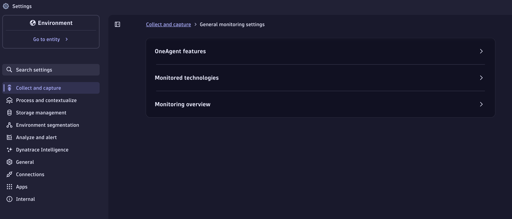
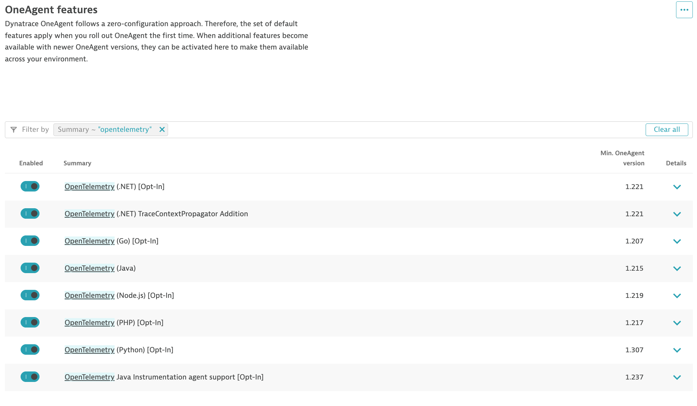
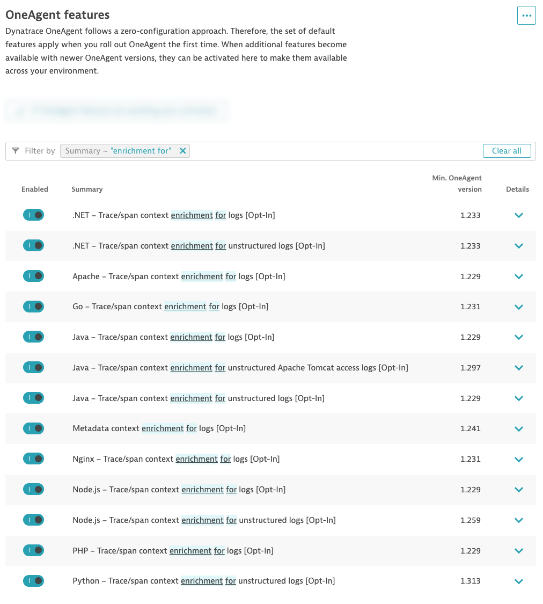

2. Prerequisites
Requirements
- A Dynatrace SaaS Tenant with DPS license (sign up here)
- Live, Sprint, or Dev environment
- Full administrator access to the account and tenant
Prerequisites#
You will need full administrator access to a Dynatrace SaaS tenant with a DPS license.
- Enable OpenTelemetry OneAgent Features
- Enable Log Enrichment OneAgent Features
Enable OpenTelemetry OneAgent Features#
The demo application in this lab, AstroShop, contains OpenTelemetry instrumentation that can be picked up by OneAgent.

Navigate to the Settings app in the Dynatrace tenant. Click on Collect and Captureand then OneAgent Features from the Menu on the left bar. Search for features that contain the word OpenTelemetry. Enable all OneAgent features for OpenTelemetry.

Enable Log Enrichment OneAgent Features#
Dynatrace can enrich your ingested log data with additional information that helps Dynatrace to recognize, correlate, and evaluate the data. Log enrichment results in a more refined analysis of your logs. Log enrichment enables you to seamlessly switch context and analyze individual spans, transactions, or entire workloads.
Navigate to the Settings app in the Dynatrace tenant. Click on Collect and Capture and then OneAgent Features from the Menu on the left bar. Search for features that contain the words enrichment for. Enable all OneAgent features for Log Enrichment.
Node.js Log Enrichment
Technically you only need to enable Log Enrichment for Node.js for this lab. However, we recommend enabling this capability for all technologies to get the most value out of your log data.

Knowledge check#
These settings are prerequisites
Both OneAgent feature groups (OpenTelemetry and Log Enrichment) must be enabled before you deploy Dynatrace in the next sections, otherwise the enrichment context will be missing from the logs you ingest.
Validate your environment#
Your hands-on environment (a Kubernetes cluster running the AstroShop demo app) is provisioned for you when you start the lab. Open the Terminal tab and run the checks below — all three must pass before you continue.